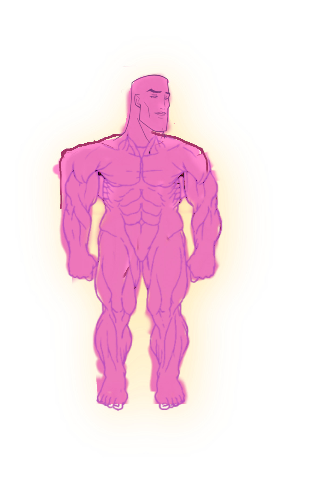

<header id="topbar-placeholder"></header>
<link rel="stylesheet" href="../Global/topbar/topbar.css">
<script>
    document.addEventListener('DOMContentLoaded', function() {
        fetch('../Global/topbar/topbar.html')
            .then(response => response.text())
            .then(data => {
                document.getElementById('topbar-placeholder').innerHTML = data;
            })
            .catch(error => console.error('Error fetching topbar:', error));
    });
</script>

<a1> HLEP</a1>
<style>
  /* Make sure the container (like body) is positioned relative or fixed */
  body {
    position: relative; /* or 'fixed' if you want it relative to the viewport */
    height: 100vh; /* full viewport height */
    margin: 0; /* remove default margin */
  }

  /* Style the image to be fixed in bottom right */
  #bottom-right-image {
    position: fixed;  /* fixed to viewport */
    bottom: 10px;     /* 10px from bottom */
    right: 10px;      /* 10px from right */
    width: 16px;      /* size */
    height: 16px;
    z-index: 1000;    /* ensure it’s on top */
  }
</style>



